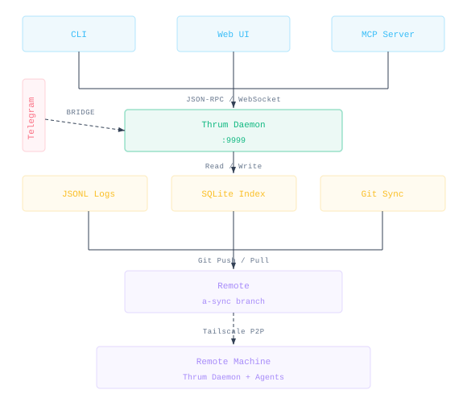

System Architecture

The Daemon: Central Coordinator
The daemon is the one process that everything else talks to. Start it once and it handles messaging, sync, and state for all your agents — CLI, Web UI, and MCP server all go through it.
Core Services
| Service | Purpose | Benefit |
|---|---|---|
| RPC Server | JSON-RPC 2.0 API over Unix socket | CLI and programmatic access |
| WebSocket Server | Real-time bidirectional communication | Web UI and live updates |
| Sync Loop | Automatic Git fetch/merge/push (60s interval) | Cross-machine synchronization |
| Subscription Dispatcher | Route notifications to interested clients | Targeted communication |
| State Management | JSONL log + SQLite projection | Persistence + fast queries |
RPC Accept Loop
When a client connects to the Unix socket, the daemon's accept loop runs these steps before dispatching to any handler:
- Peercred PID extraction — the kernel provides the connecting process's
PID via
SO_PEERCRED(Linux) orLOCAL_PEERCRED(macOS). No trust is placed in any client-supplied identity at this stage. - DaemonResolve — 3-priority chain — the daemon resolves the caller's agent
identity in priority order:
- PID match: walk the process tree from the peercred PID; if it matches an
agent_pidin a registered identity file, that agent is the caller. - Worktree match: derive the calling process's worktree from its CWD; if exactly one identity file belongs to that worktree, use it.
caller_agent_idfield: fall back to the agent ID supplied in the JSON-RPC request (honored only when peercred resolution is unavailable, e.g., in tests or non-Unix-socket contexts). Since v0.9.1 (thrum-ndtw): the resolver distinguishes introspection failure from provable anonymity. When the kernel refuses peer credentials or gopsutil can't read the PID's CWD, the resolver returns a raw error and the daemon falls through to thecaller_agent_idfield (legacy pre-v0.9.0 path) rather than treating the caller as anonymous. Only a successful introspection that resolves to a git root with no matchingsession_refsentry counts as "provably anonymous."
- PID match: walk the process tree from the peercred PID; if it matches an
- Guard enforcement — before the handler runs, the identity guard layer checks whether the resolved caller is permitted to execute the requested method. Mutating RPCs require a resolved, registered identity. Anonymous methods (health, agent.whoami, and ~28 others) pass through without resolution.
Everything Depends on the Daemon
┌─────────────────────────────────────────────────────────────┐
│ CLIENTS (Depend on Daemon) │
├─────────────────────────────────────────────────────────────┤
│ │
│ ┌─────────────┐ ┌─────────────┐ ┌─────────────┐ │
│ │ CLI │ │ Web UI │ │ MCP Server │ │
│ │ (thrum) │ │ (React) │ │ (stdio) │ │
│ └──────┬──────┘ └──────┬──────┘ └──────┬──────┘ │
│ │ │ │ │
│ │ Unix Socket │ WebSocket │ Unix Socket │
│ │ JSON-RPC 2.0 │ JSON-RPC 2.0 │ + WebSocket │
│ │ │ │ │
└──────────┼─────────────────┼──────────────────┼──────────────┘
│ │ │
▼ ▼ ▼
┌─────────────────────────────────────────────────┐
│ DAEMON │
│ (Single source of truth for all clients) │
└─────────────────────────────────────────────────┘CLI (thrum command): Sends messages, checks inbox, manages sessions. All
commands go through the daemon via Unix socket.
Web UI (Embedded React SPA): Provides a graphical interface for viewing messages and agent activity. Served from the same port as WebSocket (default 9999). Browser users are auto-registered via git config.
MCP Server (thrum mcp serve): Exposes Thrum functionality as native MCP
tools over stdio, enabling LLM agents (e.g., Claude Code) to communicate
directly through MCP protocol without CLI shell-outs. Connects to the daemon via
Unix socket for RPC and WebSocket for real-time push notifications. Provides 4
core messaging tools: send_message, check_messages, wait_for_message, and
list_agents.
Key Features
1. Persistent Messaging
Messages are stored in append-only JSONL logs on a dedicated a-sync orphan
branch, accessed via a sync worktree at .git/thrum-sync/a-sync/:
.git/thrum-sync/a-sync/ ← Sync worktree on a-sync branch
├── events.jsonl ← Agent lifecycle events
└── messages/
└── *.jsonl ← Per-agent message logs
.thrum/ ← Gitignored entirely
├── var/
│ ├── messages.db ← SQLite query cache
│ ├── thrum.sock ← Unix socket
│ ├── thrum.pid ← Process ID (JSON: PID, RepoPath, StartedAt, SocketPath)
│ ├── thrum.lock ← flock for SIGKILL resilience
│ ├── ws.port ← WebSocket port number
│ └── sync.lock ← Sync lock
├── identities/ ← Per-worktree agent identities
│ └── {agent_name}.json
├── context/ ← Per-agent context storage
│ └── {agent_name}.md
└── redirect ← (feature worktrees only) points to main .thrum/Messages survive session restarts, machine reboots, context window compaction, and agent replacement.
2. Git-Based Synchronization
The daemon syncs messages via the sync worktree at .git/thrum-sync/a-sync/,
checked out on the a-sync orphan branch. No branch switching needed — all git
operations happen within the worktree:
┌─────────────────────────────────────────────────────────────┐
│ Sync Loop (60s) in .git/thrum-sync/a-sync/ │
├─────────────────────────────────────────────────────────────┤
│ 1. Acquire lock (.thrum/var/sync.lock) │
│ 2. Fetch remote in worktree │
│ 3. Merge JSONL (append-only dedup by event ID) │
│ 4. Project new events into SQLite │
│ 5. Notify subscribers of new events │
│ 6. Commit & push local changes in worktree │
│ 7. Release lock │
└─────────────────────────────────────────────────────────────┘Why Git? Works offline (changes accumulate locally), leverages existing authentication (SSH keys, HTTPS), provides a natural audit trail, and needs no additional infrastructure.
3. Agent & Session Management
Agents register with a human-readable name, role, and module:
thrum agent register --name furiosa --role=implementer --module=authAgent names follow the pattern [a-z0-9_]+. Reserved names: daemon, system,
thrum, all, broadcast. Identity resolves in this order: THRUM_NAME env
var > --name flag > solo-agent auto-select.
Each agent gets an identity file at .thrum/identities/{name}.json. Multiple
agents can coexist in a single worktree.
Sessions track active work periods:
thrum session start # Begin working
# ... do work ...
thrum session end # FinishAgents can be deleted and orphaned agents cleaned up:
thrum agent delete furiosa # Delete a specific agent
thrum agent cleanup --dry-run # Preview orphaned agents
thrum agent cleanup --force # Delete all orphaned agents4. Subscription-Based Notifications
The daemon pushes real-time notifications to connected clients when messages
match an active subscription. From the CLI, use thrum wait to block until a
message arrives:
# Block until a message arrives (30s default timeout)
thrum wait
# Block up to 5 minutes, include messages from the last 30s
thrum wait --timeout 5m --after -30sThe underlying subscribe, unsubscribe, and subscriptions.list RPC methods
are internal — used by the MCP server and WebSocket clients, not the CLI.
When matching messages arrive, subscribers receive real-time notifications:
{
"method": "notification.message",
"params": {
"message_id": "msg_01HXE...",
"preview": "Auth implementation complete...",
"matched_subscription": {
"match_type": "scope"
}
}
}5. Live Git State Tracking
The daemon tracks what each agent is working on in real-time:
-- agent_work_contexts table
session_id | agent_id | branch | unmerged_commits | uncommitted_files
ses_01HXE... | furiosa | feature/auth| 3 | ["src/auth.go"]
ses_02HXF... | maximus | feature/db | 1 | []It tracks current branch, unmerged commits vs main, changed files, uncommitted modifications, and agent-set task and intent. Agent2 can see "furiosa is working on auth.go with 3 unmerged commits" — no manual investigation, no duplicate work, intelligent handoffs.
6. Dual-Transport API (Single Port)
The daemon serves the WebSocket API and embedded Web UI SPA on the same port
(default 9999, configurable via THRUM_WS_PORT). The WebSocket endpoint is at
/ws; all other paths serve the React SPA.
| Transport | Endpoint | Use Case |
|---|---|---|
| Unix Socket | .thrum/var/thrum.sock |
CLI, MCP server, scripts |
| WebSocket | ws://localhost:9999/ws |
Web UI, MCP waiter, real-time apps |
| HTTP | http://localhost:9999/ |
Embedded React SPA (Web UI) |
40+ registered RPC methods on Unix socket. Key methods:
health- Daemon statusagent.register,agent.list,agent.whoami,agent.listContext,agent.delete,agent.cleanupsession.start,session.end,session.list,session.heartbeat,session.setIntent,session.setTaskmessage.send,message.get,message.list,message.edit,message.delete,message.markReadsubscribe,unsubscribe,subscriptions.list(internal — used by MCP server and WebSocket clients)sync.force,sync.statuspeer.start_pairing,peer.wait_pairing,peer.join,peer.list,peer.status,peer.remove,peer.configure,peer.address_changeduser.register,user.identify(user.register is WebSocket-only)
7. Message Lifecycle
Full message lifecycle management beyond send/receive:
thrum message get MSG_ID # Retrieve a message with full details
thrum message edit MSG_ID TEXT # Edit your own messages (full replacement)
thrum message delete MSG_ID # Delete a message (requires --force)Messages are automatically marked as read when viewed via thrum inbox or
thrum message get. Explicit mark-read is also available via the
message.markRead RPC method.
8. Coordination Commands
Lightweight commands for checking team activity:
thrum who-has auth.go # Which agents are editing a file?
thrum ping @reviewer # Is an agent online? Show last-seen timeThese query agent work contexts to provide quick answers without full status output.
9. Agent Context Management
Agents save and retrieve volatile project state that doesn't belong in git commits but needs to survive session boundaries:
# Save context from a file or stdin
thrum context save --file continuation-notes.md
echo "Next steps: finish JWT implementation" | thrum context save
# View saved context
thrum context show
# Share context across worktrees (manual sync)
thrum context syncContext files live at .thrum/context/{agent-name}.md and appear in
thrum overview output. Use the /thrum:update-project skill in Claude Code
for guided context updates.
Storage Architecture
Thrum uses event sourcing with CQRS:
┌─────────────────────────────────────────────────────────────┐
│ Event Sourcing + CQRS │
├─────────────────────────────────────────────────────────────┤
│ │
│ ┌─────────────────────┐ ┌─────────────────────────┐ │
│ │ JSONL Event Logs │ │ SQLite Projection │ │
│ │ (Source of Truth) │────▶│ (Query Model) │ │
│ │ in sync worktree │ │ in .thrum/var/ │ │
│ └─────────────────────┘ └─────────────────────────┘ │
│ │ │ │
│ │ On a-sync branch │ Gitignored │
│ │ Append-only │ Rebuildable │
│ │ Conflict-free merge │ Fast queries │
│ │ │ │
└────────┼──────────────────────────────┼──────────────────────┘
│ │
▼ ▼
Sync via worktree Local CLI/UI queriesJSONL merges conflict-free (immutable events with unique IDs). SQLite provides fast indexed queries. SQLite can be rebuilt from JSONL anytime. Offline-first: works without network.
What the Daemon Enables
For the CLI
| Command | Daemon Feature Used |
|---|---|
thrum send "Hello" |
message.send RPC + auto-sync |
thrum inbox |
message.list RPC with filtering |
thrum wait |
subscribe RPC + push notifications (internal RPC) |
thrum agent list --context |
agent.listContext RPC (live git state) |
thrum who-has FILE |
agent.listContext RPC filtered by file |
thrum ping @role |
agent.list + agent.listContext RPCs |
thrum quickstart --name NAME |
agent.register + session.start + session.setIntent RPCs |
thrum overview |
Multiple RPCs combined into one view |
thrum sync force |
sync.force RPC |
thrum sync status |
sync.status RPC |
thrum agent delete NAME |
agent.delete RPC |
thrum agent cleanup |
agent.cleanup RPC |
thrum monitor start/list/show/stop/logs/restart |
monitor.* RPCs (Unix socket only) |
For the Web UI
| Feature | Daemon Feature Used |
|---|---|
| Real-time message feed | WebSocket + notification.message |
| Agent activity | agent.listContext RPC |
| Unread counts | message.list with unread: true |
| Live updates | WebSocket notifications |
For MCP Integration
thrum mcp serve runs an MCP server on stdio (JSON-RPC over stdin/stdout),
enabling LLM agents to communicate via native MCP tools. It provides 4 core
messaging tools: send_message, check_messages, wait_for_message, and
list_agents.
See MCP Server for the complete tools reference, configuration, and setup instructions.
Foundation Packages
The sections below describe the internal packages that implement the architecture above.
Package Structure
internal/
├── bridge/ # Cross-repo communication (v0.7.0)
│ ├── bridge.go # TransportBridge interface, Notification type
│ ├── msgmap.go # Local↔remote message ID mapping (LRU, max 10k)
│ ├── relay.go # Common inbound/outbound relay with proxy registration
│ ├── wsclient.go # Shared WebSocket client with loopback validation
│ └── peer/ # PeerTransport, PeerBridge, address validation
├── tmux/ # Tmux session operations, nudge delivery, per-session mutex (v0.7.1)
├── restart/ # JSONL conversation extraction, snapshot formatting (v0.7.1)
├── daemon/
│ ├── monitor/ # Monitor job supervisor: spawn, line-read, debounce, delivery
│ ├── permission/ # Permission-prompt detection, poller, nudge state (v0.9.0)
│ └── reconcile/ # Peer drift auto-reconciliation engine (v0.9.0)
├── cli/
│ ├── worktree.go # ensureWorktreeRedirects, enforceOneIdentity, buildQuickstartCmd
│ └── hints/ # Hint pipeline: HintSource, StateAccessor, Shape B/C rendering (v0.9.0)
├── identity/
│ └── guard/ # Identity guard enforcement: 8 guards, 3 modes, WritePID (v0.9.0)
├── config/ # Configuration loading, identity files, agent naming
├── jsonl/ # JSONL reader/writer with file locking
├── projection/ # SQLite projection engine (multi-file rebuild)
├── schema/ # SQLite schema, migrations, JSONL sharding migration
├── paths/ # Path resolution, redirect, sync worktree path
├── gitctx/ # Git-derived work context extraction
└── types/ # Shared event typesConfiguration (internal/config)
Identity File Selection (v0.7.0)
Which identity file to load (in priority order):
THRUM_NAMEenv var → load{name}.jsondirectly- Solo-agent auto-select → only one
.jsonfile inidentities/ - PID match → walk process tree to find runtime PID, match against
agent_pidfield in identity files - Worktree match → filter by current git worktree name
- Error if no unambiguous selection
After file selection, field values can be overridden:
- CLI flags (
--role,--module) override env vars override identity file
See Identity System for full details on PID resolution and adoption logic.
Identity File Format
Identity files are stored at .thrum/identities/{agent_name}.json
(per-worktree):
{
"version": 5,
"repo_id": "r_7K2Q1X9M3P0B",
"agent": {
"kind": "agent",
"name": "furiosa",
"role": "implementer",
"module": "sync-daemon",
"display": "Sync Implementer"
},
"worktree": "daemon",
"agent_pid": 12345,
"preferred_runtime": "claude",
"runtime": "claude",
"tmux_session": "implementer-daemon:0.0",
"agent_status": "working",
"agent_status_updated_at": "2026-02-03T18:05:00.000Z",
"confirmed_by": "human:leon",
"updated_at": "2026-02-03T18:02:10.000Z"
}Reserved pseudo-agents (such as @supervisor_<project>) use the same format
with a reserved: true field (omitempty — absent on normal agents). Reserved
agents are hidden from thrum team output by default.
{
"version": 5,
"repo_id": "r_7K2Q1X9M3P0B",
"agent": {
"kind": "agent",
"name": "supervisor_thrum",
"role": "supervisor",
"module": "",
"display": "Thrum Supervisor"
},
"reserved": true,
"worktree": "main",
"updated_at": "2026-04-19T10:00:00.000Z"
}Agent Naming
Agents support human-readable names:
--name furiosaonquickstartoragent registerTHRUM_NAMEenv var (highest priority)- Names:
[a-z0-9_]+(lowercase alphanumeric + underscores) - Reserved:
daemon,system,thrum,all,broadcast - When name is provided, it becomes the agent ID directly (e.g.,
furiosa) - When omitted, falls back to
{role}_{hash10}format (e.g.,coordinator_1B9K33T6RK)
Config Struct
type Config struct {
RepoID string // Repository ID
Agent AgentConfig // Agent identity
Display string // Display name
}
type AgentConfig struct {
Kind string // "agent" or "human"
Name string // Agent name (e.g., "furiosa")
Role string // Agent role (e.g., "implementer")
Module string // Module/component responsibility
Display string // Display name
}Loading
// Load from current directory
cfg, err := config.Load(flagRole, flagModule)
// Load from specific repo path
cfg, err := config.LoadWithPath(repoPath, flagRole, flagModule)Identity (internal/identity)
ID Formats
| Type | Format | Example |
|---|---|---|
| Daemon ID | d_ + 26-char ULID |
d_01HXE8Z7R9K3Q6M2W8F4VY |
| Repo ID | r_ + base32(sha256(url))[:12] |
r_7K2Q1X9M3P0B |
| Agent ID (named) | name directly | furiosa |
| Agent ID (unnamed) | role + _ + base32(hash)[:10] |
implementer_9F2K3M1Q8Z |
| User ID | user: + username |
user:leon |
| Session ID | ses_ + ulid() |
ses_01HXF2A9Y1Q0P8... |
| Session Token | tok_ + ulid() |
tok_01HXF2A9Y1Q0P8... |
| Message ID | msg_ + ulid() |
msg_01HXF2A9Y1Q0P8... |
| Event ID | evt_ + ulid() |
evt_01HXF2A9Y1Q0P8... |
Deterministic IDs
- Repo ID: Derived from Git origin URL (normalized to https, lowercased,
.gitsuffix stripped) - Agent ID (unnamed): Derived from repo_id + role + module (sha256 + Crockford base32)
- Same inputs always produce the same ID
Unique IDs
- Session, Message, Event IDs: Use ULID (time-ordered, unique)
- ULID format: 26 characters, sortable by time, 128-bit random
- Thread-safe generation with mutex-protected monotonic entropy
Agent IDs are generated internally from the role and a hash. See Development Guide for implementation details.
Paths (internal/paths)
Path Resolution
The paths package handles path resolution for multi-worktree setups and sync
worktree location.
Key functions:
| Function | Returns | Description |
|---|---|---|
ResolveThrumDir(repoPath) |
.thrum/ path |
Follows .thrum/redirect if present |
SyncWorktreePath(repoPath) |
.git/thrum-sync/a-sync/ path |
Uses git-common-dir for nested worktree support |
VarDir(thrumDir) |
.thrum/var/ path |
Runtime files directory |
IdentitiesDir(repoPath) |
.thrum/identities/ path |
Per-worktree agent identity files |
Redirect File
Feature worktrees share the main worktree's daemon and state via a redirect file:
.thrum/redirect -> /path/to/main/worktree/.thrumResolution rules:
- If
.thrum/redirectexists, read target path and use it as the effective.thrum/directory - Target must be an absolute path
- Redirect chains (A -> B -> C) are detected and rejected
- Self-referencing redirects are rejected
- If no redirect file, use local
.thrum/(this is the main worktree)
Note: IdentitiesDir() always uses the LOCAL .thrum/identities/ (not the
redirect target), because agent identities are per-worktree.
Sync Worktree Path
The sync worktree lives at .git/thrum-sync/a-sync/:
syncDir, err := paths.SyncWorktreePath(repoPath)
// Returns: /path/to/repo/.git/thrum-sync/a-syncUses git rev-parse --git-common-dir to find the correct .git/ directory,
which handles nested worktrees correctly (where .git is a file pointing to the
parent repo's .git/worktrees/ directory).
Git Context (internal/gitctx)
Work Context Extraction
The gitctx package extracts live Git state for agent work context tracking.
Called during session.heartbeat to provide real-time visibility into what each
agent is working on.
Exported types:
type WorkContext struct {
Branch string `json:"branch"`
WorktreePath string `json:"worktree_path"`
UnmergedCommits []CommitSummary `json:"unmerged_commits"`
UncommittedFiles []string `json:"uncommitted_files"`
ChangedFiles []string `json:"changed_files"`
ExtractedAt time.Time `json:"extracted_at"`
}
type CommitSummary struct {
SHA string `json:"sha"`
Message string `json:"message"` // First line only
Files []string `json:"files"`
}ExtractWorkContext(worktreePath):
- Returns empty context (not error) if path is not a git repo
- Determines base branch automatically (
origin/main,origin/master, orHEAD~10) - Extracts unmerged commits with per-commit file lists
- Runs in ~80ms typically
JSONL (internal/jsonl)
Append-Only Log
// Writing
writer, _ := jsonl.NewWriter("events.jsonl")
writer.Append(event)
writer.Close()
// Reading all
reader, _ := jsonl.NewReader("events.jsonl")
messages, _ := reader.ReadAll()
// Streaming
ctx := context.Background()
ch := reader.Stream(ctx)
for msg := range ch {
// Process message
}Safety Features
- File locking: Uses
syscall.Flock()to prevent concurrent writes - Atomic appends: Write to temp file, then append to main file, fsync
- Auto-create: Creates parent directories and file if needed
- In-process mutex:
sync.Mutexfor thread safety within the same process
Sharded File Layout
JSONL files are sharded by type and agent (in the sync worktree at
.git/thrum-sync/a-sync/):
events.jsonl # Agent lifecycle, sessions, threads
messages/
furiosa.jsonl # Messages authored by agent "furiosa"
coordinator_1B9K.jsonl # Messages authored by unnamed agentEvent routing is handled by internal/daemon/state/ which directs message.*
events to per-agent files and all other events to events.jsonl.
Schema (internal/schema)
Database Tables
messages # All messages (create/edit/delete)
message_scopes # Routing scopes (many-to-many)
message_refs # References (many-to-many)
message_reads # Per-session read tracking (local-only, no git sync)
message_edits # Edit history tracking
agents # Registered agents (kind: "agent" or "user")
sessions # Agent work periods
session_scopes # Session context scopes
session_refs # Session context references
subscriptions # Push notification subscriptions
agent_work_contexts # Live git state per session
groups # Named collections for targeted messaging
group_members # Group membership (agents and roles)
events # Sequence-ordered, deduplicated event log (for sync)
sync_checkpoints # Per-peer sync progress tracking
command_queue # Queue dispatch for tmux sessions
monitors # Persisted monitor job specs (v20)
permission_nudges # Pending permission-prompt nudges (v21)
daemon_identity # Local daemon identity cache (v23)
telegram_msg_map # Telegram ↔ Thrum message ID map (v24)
schema_version # Migration trackingSchema Version
Current version: 24
Key migrations:
- v3 -> v4: Impersonation support (
authored_by,disclosedcolumns) - v5 -> v6: Agent work contexts table, message reads, session scopes/refs
- v6 -> v7: Event ID backfill (ULID
event_idon all JSONL events), JSONL sharding migration - v7 -> v8: Groups feature (
groupsandgroup_memberstables),@everyonebuilt-in group - v8 -> v9:
eventsandsync_checkpointstables added for Tailscale-style daemon-to-daemon sync (sequence-ordered deduplicated event log) - v9 -> v10:
file_changescolumn added toagent_work_contexts - v10 -> v11:
hostnamecolumn added toagentstable - v11 -> v12:
threadstable dropped (threads are now implicit — every message with athread_idforms a thread automatically, removing the need for explicit thread creation events) - v12 -> v13: Backfill NULL
display,hostname, andlast_seen_atvalues inagentstable to empty strings (ensures NOT NULL invariants on existing rows) - v13 -> v14:
message_deliveriestable (durable delivery/seen/read tracking per recipient) - v14 -> v15:
purge_metadatatable (stores latest purge cutoff for sync-aware filtering) - v15 -> v16:
claude_pid INTEGER NOT NULL DEFAULT 0added toagentstable (PID-first identity resolution) - v16 -> v17:
claude_pidrenamed toagent_pidinagentstable (multi-runtime support) - v17 -> v18:
command_queuetable added (queue dispatch for tmux sessions) - v18 -> v19:
silence_msandnotify_on_completecolumns added tocommand_queue - v19 -> v20:
monitorstable added (monitor job specs for supervisor respawn) - v20 -> v21:
permission_nudgestable added (persistent permission-prompt nudge state for restart resilience) - v21 -> v22:
origin_daemon TEXTcolumn added toagentstable with backfill (cross-daemon registration scoping; seethrum-mm3l) - v22 -> v23:
daemon_identitytable added (single-row local cache of the daemon's identity block, mirrored from.thrum/config.json) - v23 -> v24:
telegram_msg_maptable added (durable Telegram message ID ↔ Thrum message ID mapping; survives daemon restart so in-flight permission approvals route correctly)
Initialization
db, _ := schema.OpenDB("thrum.db")
schema.InitDB(db) // Create tables and indexes
// Or use migration (checks version first, runs incremental migrations)
schema.Migrate(db)JSONL Migrations
The schema package also handles JSONL structure migrations:
// Migrate monolithic messages.jsonl -> per-agent sharded files
schema.MigrateJSONLSharding(syncDir)
// Backfill event_id (ULID) for events that lack it
schema.BackfillEventID(syncDir)Features
- Pure Go SQLite: Uses
modernc.org/sqlite(no CGO) - WAL mode: Better concurrency
- Foreign keys: Enabled with
ON DELETE CASCADE - Indexes: Optimized for common queries
Projection (internal/projection)
Event Replay
The projector rebuilds SQLite from sharded JSONL event logs:
db, _ := schema.OpenDB("thrum.db")
schema.InitDB(db)
projector := projection.NewProjector(db)
// Rebuild from sync worktree (reads events.jsonl + messages/*.jsonl)
projector.Rebuild(syncDir)
// Or apply a single event
projector.Apply(eventJSON)Multi-File Rebuild
Rebuild(syncDir) handles the sharded JSONL structure:
- Read
events.jsonl(agent lifecycle, sessions) - Glob
messages/*.jsonl(per-agent message files) - Sort ALL events globally by
(timestamp, event_id)for deterministic ordering - Apply to SQLite in order
File boundaries are transparent to the projector — it only cares about event ordering.
Event Types
| Event | Action |
|---|---|
message.create |
Insert into messages, scopes, refs |
message.edit |
Update body_content, updated_at, record edit history |
message.delete |
Set deleted=1, deleted_at, delete_reason |
thread.updated |
Notify subscribers of thread activity (UI push) |
group.create |
Insert into groups |
group.delete |
Delete group and members |
agent.register |
Insert/replace agent |
agent.update |
Merge work contexts for agent |
agent.session.start |
Insert session |
agent.session.end |
Update ended_at, end_reason |
Forward Compatibility
Unknown event types are silently ignored, allowing older projectors to process logs with newer event types.
Types (internal/types)
Shared Go structs for all event types:
BaseEvent- Common fields:type,timestamp,event_id,v(version)MessageCreateEvent- Message creation with body, scopes, refsMessageEditEvent- Message body editMessageDeleteEvent- Soft delete with reasonGroupCreateEvent- Group creation with name and descriptionGroupDeleteEvent- Group deletionAgentRegisterEvent- Agent registration (kind: "agent" or "user")AgentUpdateEvent- Agent work context updatesAgentCleanupEvent- Agent cleanup/deletionAgentSessionStartEvent- Session startAgentSessionEndEvent- Session end with reasonSessionWorkContext- Work context data for sync
Each event includes:
type: Event type string (e.g.,"message.create")timestamp: ISO 8601 timestampevent_id: ULID for deduplication (auto-generated byState.WriteEvent())v: Schema version (currently1)- Event-specific fields
Design Principles
1. Append-Only Events
JSONL is the source of truth. SQLite is a rebuildable projection for fast queries. The projection can be deleted and rebuilt from JSONL at any time.
2. Per-Agent Sharding
Message events are sharded into per-agent JSONL files
(messages/{agent}.jsonl). This reduces merge conflicts, improves sync
performance, and enables per-agent file tracking in Git.
3. Deterministic Hashing
Repo and agent IDs are deterministic (SHA256-based), enabling identity verification across machines without central coordination.
4. Time-Ordered IDs
ULID format ensures IDs (messages, sessions, events) are sortable by creation time and globally unique.
5. Offline-First
No network required for local operation. Git handles replication via the sync loop.
6. Low-Conflict
Immutable events + ULID timestamps + per-agent sharding minimize merge conflicts during Git sync.
7. Path Indirection
The .thrum/redirect pattern allows multiple worktrees to share a single daemon
and state directory without hardcoding paths.
8. Timeout Enforcement (v0.4.3)
All I/O paths enforce timeouts to prevent indefinite hangs:
- 5s CLI dial timeout (net.DialTimeout)
- 10s RPC call timeout (context.WithTimeout)
- 10s server per-request timeout (http.TimeoutHandler)
- 10s WebSocket handshake timeout
- 5s/10s git command timeouts (via
safecmdwrapper) - Context-scoped SQLite queries (via
safedbwrapper)
Lock scope has been reduced — no mutex is held during I/O, git, or WebSocket dispatch operations.
Backup & Restore
Thrum provides built-in backup and restore via thrum backup /
thrum backup restore.
What gets backed up:
- JSONL event logs —
events.jsonlandmessages/*.jsonlcopied from the sync worktree (source of truth) - Local-only SQLite tables —
message_reads,subscriptions, andsync_checkpointsexported as JSONL (these are not in the git-synced JSONL logs) - Config files —
.thrum/config.jsonand related runtime config
Backup layout (~/.thrum-backups/<repo>/):
current/— most recent backup (JSONL + local tables + config)archives/— compressed.zipsnapshots of previouscurrent/runs- GFS (Grandfather-Father-Son) rotation trims archives by daily/weekly/monthly retention windows
Plugin hooks — third-party data (e.g., Beads task DB) can register a backup
plugin via thrum backup plugin add. The plugin's command runs after the core
backup and receives THRUM_BACKUP_DIR, THRUM_BACKUP_REPO, and
THRUM_BACKUP_CURRENT env vars.
Restore creates a safety backup of existing data first, then copies JSONL
back to the sync worktree, imports local tables into SQLite, and removes
messages.db so the projector rebuilds from JSONL on the next daemon start.
Plugin restore commands run after the core restore.
Upgrade Safety
Starting with v0.9.0, the daemon writes defensive backup files automatically on the first start after an upgrade. No user action needed — the files are silent safety nets.
Automatic Backup Files
Three backup files are written (backup-once pattern: never overwritten on subsequent restarts after the first successful upgrade):
| Trigger | Backup file | Location |
|---|---|---|
identity.Bootstrap detects a daemon_id rotation (e.g., legacy hostname-derived ID) |
config.json.pre-identity-bak |
.thrum/config.json.pre-identity-bak |
PeerRegistry detects a stale daemon_id in peers.json |
peers.json.pre-rotation-bak |
.thrum/var/peers.json.pre-rotation-bak |
schema.Migrate runs any migration step |
thrum.db.pre-migration-v<N>-bak (plus -shm and -wal sidecars) |
same directory as thrum.db |
You can delete these files after a successful upgrade. If something goes wrong mid-migration, they're how you get back.
Downgrade Guard
Migrate() refuses to start if the database schema version exceeds the binary's
CurrentVersion. Error text:
database schema is version N, this binary supports up to M — cannot downgrade;
use a newer binary or delete the database to start freshThis is the first hard stop Thrum has ever had for schema mismatches. Previously, running an older binary against a migrated database would silently corrupt state. Now it fails loudly before touching anything.
Recovering from a Failed Upgrade
If a migration goes wrong:
- Stop the daemon.
- Rename
thrum.db.pre-migration-v<N>-bakback tothrum.db(and the-shmand-walsidecars if they exist). - Run the older binary.
The downgrade guard will fire on the older binary if the migration already
partially ran and bumped the version. In that case, delete thrum.db entirely
(the JSONL source of truth is unaffected) and let the older daemon rebuild the
projection from scratch.
Cross-Repo Peer System (v0.7.0)
Two Thrum daemons — different repos, different machines, same machine in different worktrees — can exchange messages bidirectionally via Tailscale. Pair them once, and messages route automatically from then on.
Architecture Layers
┌──────────────────────────────────────────────────────┐
│ PeerManager — Lifecycle of all bridges │
│ ├─ ConnectAll() — Connect to all dialer-role │
│ ├─ AcceptPeer() — Handle listener-side connects │
│ └─ NotifyAddressChange() — Propagate IP changes │
├──────────────────────────────────────────────────────┤
│ PeerBridge — One per connected peer │
│ ├─ runOutbound — Local → Remote relay │
│ ├─ runInbound — Remote → Local relay │
│ └─ heartbeatLoop — 30s keepalive │
├──────────────────────────────────────────────────────┤
│ PeerTransport — TransportBridge implementation│
│ ├─ Remote (IP:port + token auth) │
│ └─ Local (reads ws.port from .thrum/var/) │
├──────────────────────────────────────────────────────┤
│ PeerRegistry — On-disk peer records │
│ └─ .thrum/peers.json │
└──────────────────────────────────────────────────────┘Pairing Flow
- Machine A runs
thrum peer add, which generates a 16-digit pairing code and a 32-byte shared token, then blocks waiting. - Machine B runs
thrum peer join --peercode <code>, validates the code, stores the peer record (role="dialer"), receives the token. - Machine A stores the peer record (role=
"listener"), and both sides start bridge goroutines. - On subsequent daemon restarts, peers with
auto_connect: truereconnect automatically viaPeerManager.ConnectAll().
Message Routing
Outbound (local → remote): The bridge subscribes to notification.message
events. Messages addressed to proxy agents (format prefix:name) are relayed to
the remote daemon after stripping the prefix. A MessageMap (max 10k entries,
LRU) stores local↔remote message ID mappings for reply threading.
Inbound (remote → local): Messages from the remote daemon are wrapped as
InboundMessage with source: "peer" metadata and injected into the local
daemon via relay.RelayInbound().
Proxy Agents
Remote agents are registered locally as {prefix}:{name} (e.g.,
sf:coordinator_main). These proxy names are addressable via @sf:coordinator
and appear in thrum team. Configure with thrum peer configure.
Address Validation
ValidateAddressChange() enforces transport-appropriate addressing:
- Local peers must be on loopback
- Tailscale peers must be in
100.64.0.0/10(CGNAT) - Network peers must stay on the same
/24subnet
See Configuration for the peers config block and
CLI Reference for the thrum peer commands.
References
- Design document:
dev-docs/2026-02-03-thrum-design.md - Sharding design:
dev-docs/2026-02-06-jsonl-sharding-and-agent-naming.md - Daemon architecture: Daemon Architecture
- Sync protocol: Sync Protocol
Next Steps
- Daemon Architecture — deeper dive into the daemon's lifecycle, RPC handlers, sync loop, and WebSocket server internals
- Sync Protocol — how the
a-syncorphan branch, JSONL dedup, and conflict-free merging work in detail - RPC API Reference — all RPC methods (35+) that the CLI and Web UI call into
- Development Guide — how to build, test, and extend Thrum